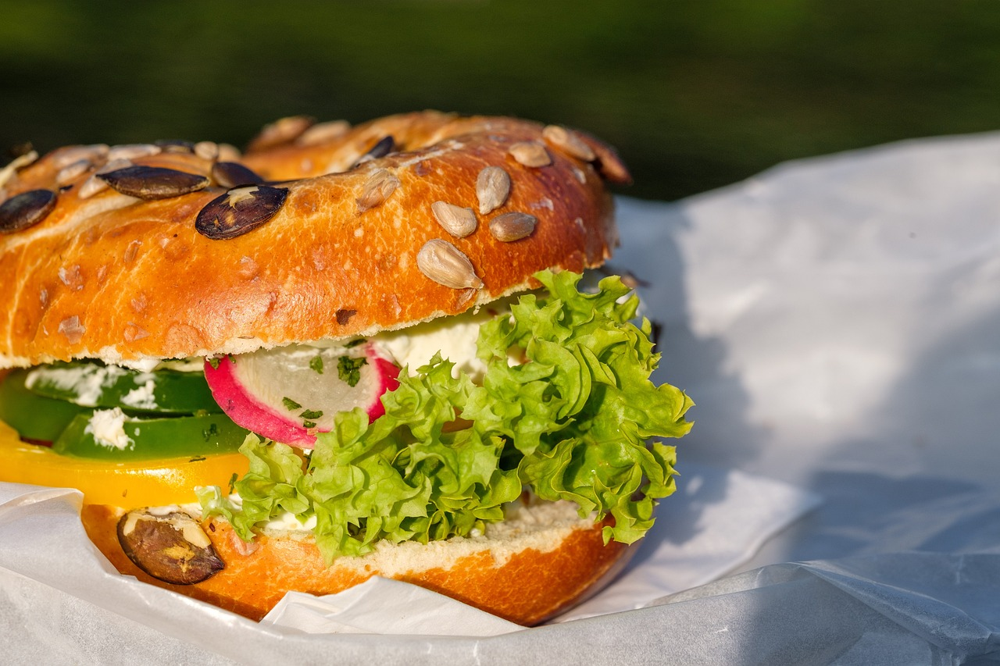

Hummus Sandwich

Description
This recipe is assembling ingredients. There's no cooking. Option for chopping and slicing vegetables. Option to toast or grill if desired.
It's time to make a hummus sandwich. The star of this sandwich is hummus, but what ingredient will be assisting? I like carrots, grilled zuchinni, raw onion, radish, lettuce, cabbage, and/or falafel to go with my hummus sandwich.
Ingredients
- Bagel, Bread, or Bun of choice, whatever you have available.
You could even use a leaf of lettuce to make a wrap if you wanted.
- Hummus! It comes in many flavors, choose one that sounds good to you.
- Choose a sidekick ingredient from here, maybe even choose 2-
- Steak Cut Carrots
- Grilled Zucchini usually leftover after a bbq!
- Onion Slab
- Falafel
- Radish Petals
- Cabbage Slaw
- Salad Sandwich
- Bun Dressing: mustard, caramalized onion, vegan tatziki, no animals mayo, etc.
Steps
- This is a Hummus Sanwich afterall, so were going to start with the star ingredient! Using some kitchen tool like a metal offset spatula, apply hummus to one half of your B (Bread, Bun, Bagel)
- The start of assembly is to put your Bun Dressing on your B of choice. I'll be putting mustard on a bagel.
- Take your sidekick ingredients and assemble them onto the dressed bun. I'll be layering slabs of carrots I sliced to go on mine.
- Reunite the hummus half with the carrot and mustard half to make a sandwich!